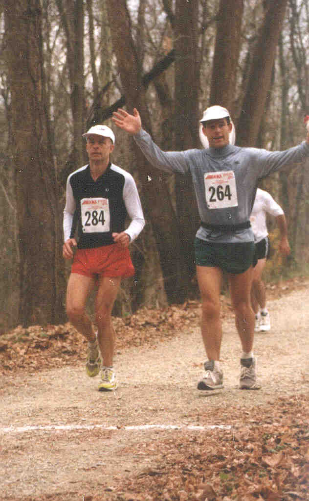

How does one go from "impossible" to "training opportunity"? What is the trick to endurance? There are many answers to this question. I have some understanding of the ones that apply to me.
I think the most important trick is acquiring the passion not only to "just do it", but to be it as well. There is at least a little athlete genetically programmed into each of us, if only we can find him or her. I have finally stumbled across the athlete in me. I am no elite athlete, but I am a bona fide one nonetheless. Endurance training is part of who I am. Consequently, in resolutions of life's daily conflicts, a workout carries a relatively high priority.
The second trick is racing. Racing is mind candy. Racing bestows those satisfying moments where you simply think: "I did it. All by myself." Significantly, you don't need to win anything to earn this satisfaction. Just ask anyone at the finish line of a first marathon.
The third trick is using your head. Everyone really is different. For example, standard advice for marathoners is to run long every 2 weeks and to limit long distance training to a few months. But for me, a long run every 6 weeks comfortably maintains distance conditioning, thereby letting me run long year round. The training load requires continual adjustment to avoid overtraining, injury, and burnout. You have to pay attention to stay on track.
I awaken a few minutes before the alarm sounds at 4:30 AM. After considering - and dismissing - the dehydration threat, I opt for coffee to accompany a hearty breakfast of fruit and french toast. Since I expect to burn about 5,000 calories more than normal today, breakfast itself will be toast, so to speak, very early in the race. I miss the turnoff to I-70 on the drive up. Fortunately, there is a bit of slack in the planning; just enough, as it turns out, to reach the starting line as the race begins. 
The JFK course divides naturally into three parts: the Appalachian Trail, the Canal towpath, and the road to the finish. The key on the first section is patience. The goal is to do no harm. Besides the obvious hazard of falls, there is the subtler danger of speed. It is hard to go slowly, especially in a race. In addition, the pace on the trail is more or less dictated by the runners around you. Being in the right part of the pack is critical. My best guess is that I spend 10 to 15 minutes too little on the trail. That may not sound like much in an event that lasts all day.
But it is. I repay this time over and over later in the course. As a consequence of my aggressiveness on the trail, I bonk out early in the towpath section. I alternate between nausea and calf cramps, the latter most likely the result of hard-paced uphills. The nausea steadily restricts my options at the aid stations. Finally, at the midway point of the race - the low point, as it turns out, I admit to myself that I am in trouble.
I decide to start on the Coke. I worry about hitting the rocket fuel - caffeine and white sugar - this early, but I am desperate. As I sip my first Coke, I fervently wish for well stocked aid stations down the trail. My wish is granted. By mile 30, I actually start to feel good. The nausea is gone, and the cramps are less severe. The weather is near perfect for racing, and the Potomac is gorgeous, with spectacular cliffs rising just beyond the canal.
I have run other races where my mind has gone on ahead and left my body out on the course to finish the race alone. I have learned from that mistake, and I do not repeat it at JFK. I studiously do not think about the finish line, or how far it is to the next aid station, or how many miles I have covered, or how fast I have covered them. I focus entirely on the present.
I run inside a universe with a gently oscillating horizon of at most 5 minutes. If the minute digit on my watch is a zero or a five, then I know it is time to take a rest. I start with 1 minute walks. Later, the rest interval goes up to a minute and a half. Still later, it goes down to a half minute. Overall, the pace works out to about twelve minute miles: slower than I had hoped for, but relentless forward progress nonetheless.
At Dam Number 4, I don a reflective vest and leave the towpath. It is a relief to be on terrain that is not flat; even the steep climb from the Potomac feels good simply because it is different. Unfortunately, my left knee decides to turn to concrete at the conclusion of each walking break. My knees never bother me, so I am ill prepared for this turn of events. I arrive at the perverse solution of shortening the walking breaks, thereby "treating" my knee pain by increasing the time spent running. Bert's needs direct him in the opposite manner, so we split up for the first time in the race.
The finish appears as twilight drains from the sky. I have literally been running, well, moving, at any rate, all day. An energetic alien assumes control of my body, yells "Yes! Yes! Yes!", pumps my fist in the air, and sprints across the line. The mixture of pain and elation that engulfs me rivals that from my first marathon. I did it!
In Boonsboro I learned that I am nowhere near ready to run a hundred miler. The lesson parallels that from Eagleman, where I learned that I am nowhere near ready to try an Ironman. Even so, Boonsboro increased my confidence that the time will come for both. I just need to be patient.
Overall: 338/856 Men: 305/733
You may wish to visit the home page for the JFK 50 Miler.
| Top | Home page |